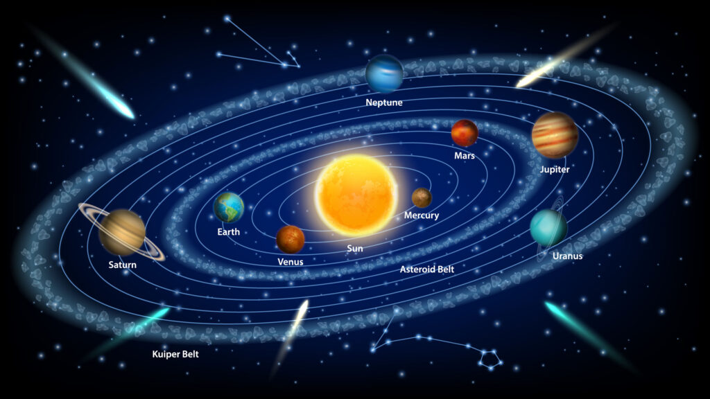
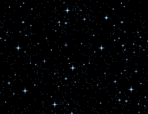

Nguyen Huu Tri Manh (s3999543)
Patrick Mcmahon
COMM 2550, Specialization 1, Interface Design and Development
19/9/2025
CONCEPT IDEAS
My Concept ideas is about space as an musical instrument, where celestial object can be use as an intrument tool by clicking and moving it around. My aim for this project is to people to use space as a other way to understand about music.
My References for this project is to copy a solar system:
(Atlas, W. (2022). How Many Planets Are There In The Solar System? [online] WorldAtlas. Available at: https://www.worldatlas.com/space/how-many-planets-are-there-in-the-solar-system.html [Accessed 17 Sep. 2025].)
I use this GIF as an background because is create the Aesthetic Effect of the websites (Swetha Lodha (2025). Mystic Softwares, Free, Tarot Reading Software, Runes Reading Software, Psychic Test Software, Numerology Software, Biorhythm Chart Software, Astro Compatibility Test Software, I Ching Software, Subliminal Message Software, Learn Tarot Software. [online] Mysticsoftwares.com. Available at: https://www.mysticsoftwares.com/ [Accessed 12 Sep. 2025].)
TECHNICAL APPROACH
The UI is build on a HTML, CSS, Javascript. The Planet orbit is running on a Math.random() when you hold and drag the planet, it will generate random pitch and rhymth that can be click on while using it. i'm also aiming my layout like a control panel, there will be a bar that you can turn on and off volume, changing pitch when interact, while moving the mouse there is also an cornate indicator moving around.
TECHNICAL ISSUES AND ENCOUNTER
The prototype itself starting with a sun in the middle and 3 planet as an experiment: Mercury, Venus, Earth. The prototype responsed to the interaction. However there are technical problems for example the interaction between:
PEER USER FEEDBACK
After reading the Feedback, the most common error in the system is the lack of information that need to be representing, what i also realizing about the interface is the instruction does not make the experience clear enough. I am aiming for the self exploration, when user explore the interaction themself and understanding the meaning of each feature. However, despite of the goal i want, the lack of feature show in the websites make the experience not only hard to understand but also difficult to navigate. Some feedback also giving a strong opions on the other part of the prototype, such as giving a different sound to interact, or different element to make the interaction more meaningfull. Overall, the confusion of the experience can be the problem of why people have a difficult time to interact with it, and the lack of information that i want to bring for the app it not meet the expectaion.
Reflection and Conclusion
From the feedback i recieved, the most critics i recieved the most is mostly about how the prototype need a clearer instruction. Another strong critics is about how i need to give the theme more stronger so it more appealing and creating more interactive that feel more dynamic and rewarding. These feedback make me realized that i need to make make the balance between the ability to understand and more diverse in my design that it can really help my experience feeling more alive. Moving forward, i'll add a message or a short guiding arrow, and ensure the audio is more directly linked to the users actions.